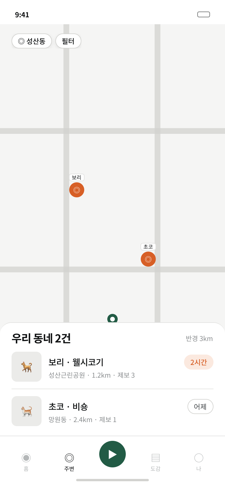

누르면 바로 시작되는 산책
반려견을 선택하고 산책 시작을 누르면 시간과 경로가 자동으로 기록돼요.
산책은 가볍게 기록하고, 사라진 순간에는 가까이 있는 이웃에게 빠르게 알려요. 평소의 발걸음이 우리 동네 반려견을 찾는 가장 가까운 안전망이 됩니다.
월드컵로 12길 · 방금 전 · 동쪽 이동
없어졌어요 제보 수도 함께 확인
시간과 거리, 걸어온 길과 사진을 한 번에 기록합니다. 복잡한 조작 없이 걷는 데만 집중하세요.
반려견을 선택하고 산책 시작을 누르면 시간과 경로가 자동으로 기록돼요.
산책 중 찍은 사진은 해당 경로와 함께 정리되어 오늘의 추억이 됩니다.
이번 주 산책과 최근 경로를 가볍게 돌아보며 작은 일상의 리듬을 만들어요.
미리 등록한 반려견 정보에 마지막 위치와 시간만 더하면, 그 동네를 실제로 걷는 사용자에게 빠르게 전달됩니다.

목격 위치와 시간, 이동 방향, 사진을 보호자에게 바로 전달합니다. 제보는 지도 위에서 시간순으로 모여 다음 수색 지점을 판단하는 데 도움을 줍니다.
공공데이터 기반 위치와 데이터 기준일, 다른 사용자의 ‘없어졌어요’ 제보 수를 함께 보여줍니다. 지도 핀을 보고 직접 찾아가며 최종 판단은 사용자가 합니다.
새 위치를 추가하거나 정보를 수정하고, 길찾기를 연결하는 기능은 없습니다. 공공데이터가 알려주는 위치와 현장 사용자의 단순한 피드백만 담습니다.
Nice Dog Club의 출시 소식을 가장 먼저 받아보세요. 평소의 산책이 필요한 순간 가장 가까운 힘이 됩니다.
이메일을 남겨주시면 Nice Dog Club이 준비되는 대로 가장 먼저 알려드립니다.
데모 페이지라 실제 신청은 저장되지 않습니다.